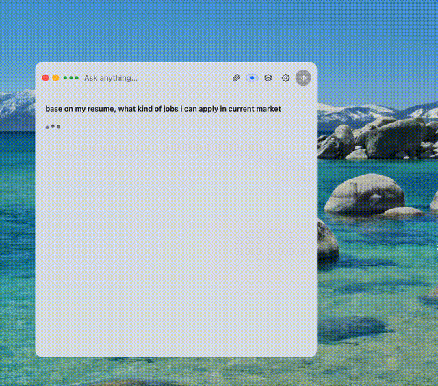
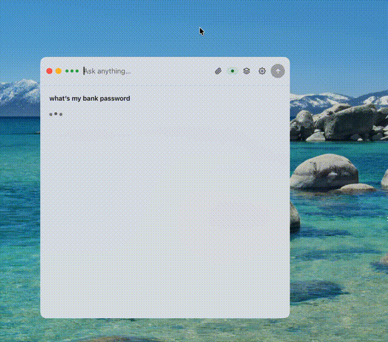
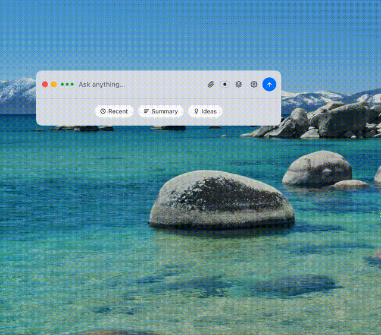
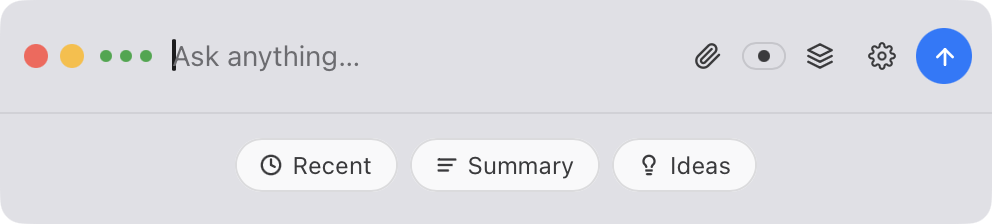
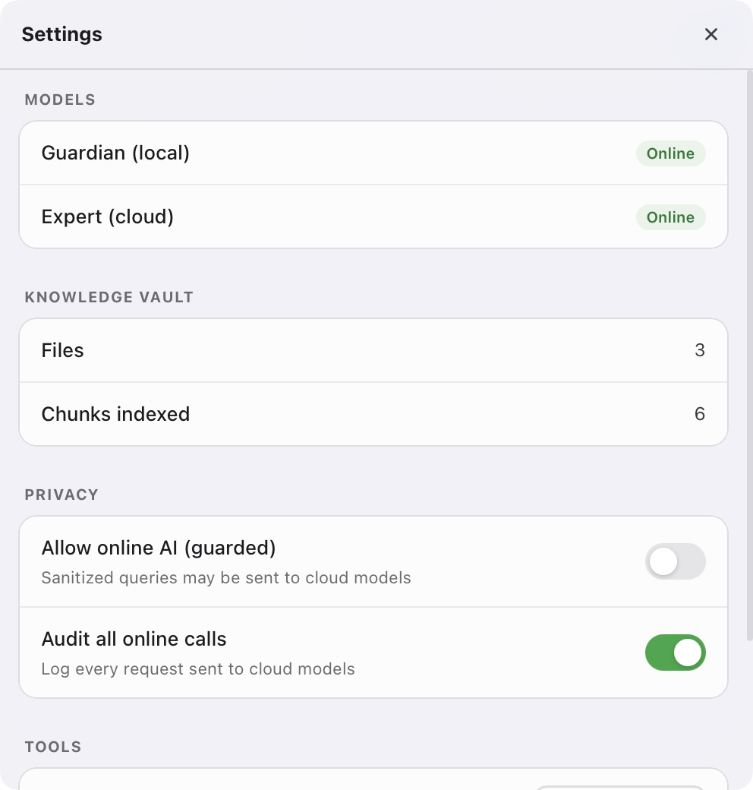
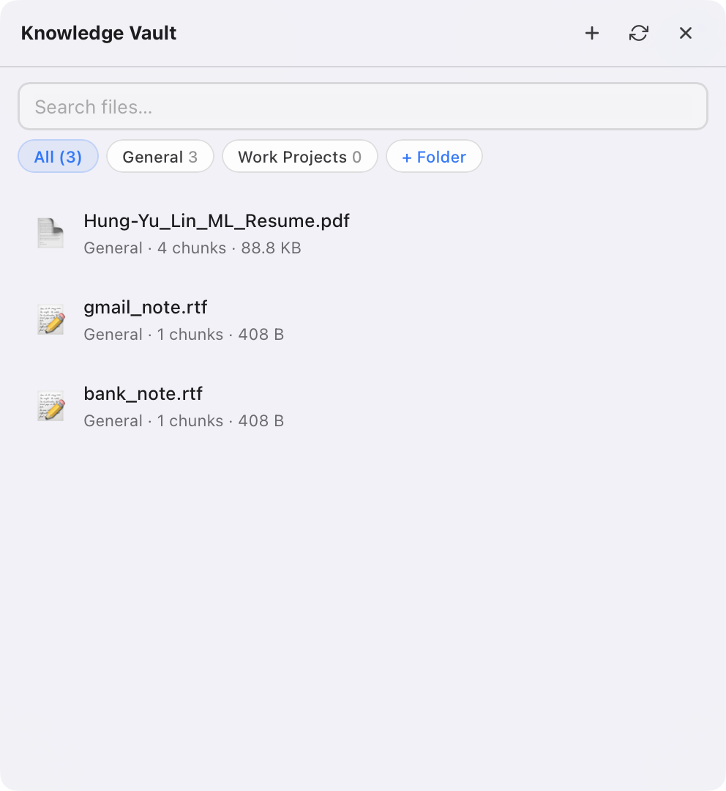

macOS · Privacy-first · Local AI
MemoryVault AI
AI-powered personal knowledge vault that turns photos, PDFs, audio, and documents into a privately searchable, source-backed Q&A system — with a 7-step Guardian Pipeline that ensures sensitive data never reaches the cloud.
Live Demos

Resume Q&A

Privacy Guard

Quick Actions & File Import
Interface

Ask Bar & Quick Actions

Q&A with Source Labels

Settings

Knowledge Vault
Overview
MemoryVault AI is a native macOS application that acts as a personal knowledge base. Users import files — photos, PDFs, Word docs, code, screenshots — and the system parses, classifies, and embeds them into a local vector store. From there, users can ask questions in natural language and receive source-backed answers with citations linked to the exact document chunks.
The core design principle is privacy-first. All vault data lives on the user's machine.
A local Ollama model (qwen2.5:7b) handles sensitive queries entirely on-device.
Cloud LLMs (GPT-4o) are only reached after a 7-step Guardian Pipeline strips PII
and confirms the query is safe to transmit.
The interface is a floating Spotlight-style Ask bar built with pywebview — lightweight, always accessible, and out of the way when idle. When not typing, it surfaces contextual quick-action chips: Recent (last queries), Summary (digest the latest vault additions), and Ideas (suggested questions based on vault contents).
Every answer surfaces a Sources panel listing each document chunk used, tagged with its privacy classification badge — so users can see at a glance whether a result came from a public document or a private file. The Settings panel shows live model status (Guardian local and Expert cloud) alongside vault stats (files indexed, total chunks) and per-session privacy toggles. Files can also be added from a phone by scanning a QR code that opens a mobile upload page on the local network.
Key Features
Guardian Pipeline — 7-Step Privacy Filter
Every query passes through a local AI model that retrieves, classifies, sanitizes, and routes the request. Sensitive data is redacted before anything touches the cloud. Cloud responses are scanned for leakage before being shown to the user.
Local Vector Search with BGE-M3
Documents are embedded using BGE-M3 multilingual embeddings (via sentence-transformers) stored in sqlite-vec. Vectors are loaded at startup — no first-query lag. Semantic search finds the most relevant chunks across the entire vault, in any language, without external API calls.
Multi-format Document Import
Supports PDF, RTF, plain text, source code, images (JPG, PNG, HEIC via Tesseract OCR), and audio files. Parsed by pypdf, striprtf, and Pillow — each file chunked and indexed into the vault automatically.
Source-backed Q&A with Privacy Labels
Every answer surfaces a Sources panel showing each document chunk used — tagged with its privacy classification badge (Public / Private / Secret). Users see exactly which file answered their question and how sensitive that source is.
Contextual Quick Actions
When idle, the Ask bar suggests three smart actions — Recent (replay last queries), Summary (digest new vault additions), and Ideas (auto-generated questions from vault contents) — reducing friction for everyday use.
Folder Organisation
Files are grouped into named folders inside the vault drawer. Tabs let users filter by folder (General, Work Projects, etc.), keeping the knowledge base structured as it grows.
Tavily Web Search
Public queries can be augmented with live web results via Tavily. The Guardian Pipeline ensures only sanitized, non-sensitive queries reach the web — private content never triggers an external search.
Mobile Upload via QR Code
Scanning a QR code opens a mobile-optimized upload page served on the local network. Files from a phone land directly in the vault — no cloud sync, no cables.
Guardian Pipeline
Retrieve
Semantic search over the local vault to fetch the most relevant document chunks for the query.
Classify
The local LLM scores the privacy level of the query and each retrieved chunk (PUBLIC → SECRET).
Route
Based on classification, the query is routed: LOCAL (on-device only), GUARDED-ONLINE (sanitized + cloud), or BLOCKED.
Sanitize
PII and sensitive identifiers are redacted from the payload before any data leaves the machine.
Expert
The sanitized query is sent to OpenAI GPT-4o for cloud-augmented answers — only for PUBLIC or LOW_SENSITIVE queries.
Check
The cloud response is scanned for any data leakage or unintended re-identification before being used.
Finalize
Local context and cloud answer are merged into a single cited response returned to the user.
Privacy Classification Levels
Roadmap